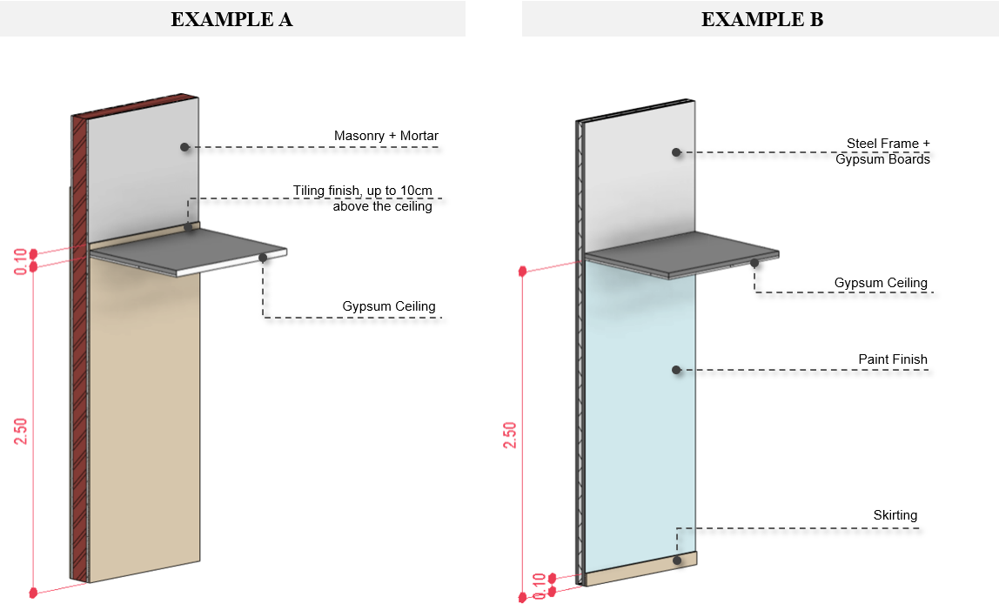

For on-site constructed solutions, the guidelines are as follows. Regardless of the method, when quantifying these elements and their associated finishes using models, it's crucial to consider the net square area (m² or ft²) as the quantification unit, considering that all voids are already accounted for in the model.
During the early estimates, one of either of these methods can be performed:
For more accurate and detailed quantities of on-site constructed elements, especially during more advanced project stages, it's essential to model walls, floors, ceilings, and their finishes as distinct single-layered objects.
Figure 08 – Example of walls modelled as single separate-layered objects.
In this approach, each material should be represented by a separate model element, differentiating the core construction element from the finishes that may be applied to it.
However, for composite construction elements that typically have a standardized composition, such as a drywall steel frame with gypsum plasterboards, modeling them as layered elements is feasible.
 Figure 09 - Examples of single separate-layered walls, considering the height according to each constructive need of each material.
Benefit: This separation method allows better control over the modeling considerations specific to each material, resulting in more accurate quantities.